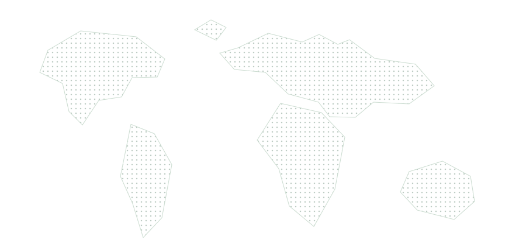

1. Configurator used differently than assumed
It was used at a different point in the journey than previously assumed.
Role and placement of the configurator were revised in the journey design.
What started as a question about the model page on Porsche.com evolved into a cross-market foundational study of the entire vehicle purchase journey.

The product team initially wanted to understand the experience on the model page only. I proposed expanding the scope to the full purchase journey to avoid optimising one touchpoint without understanding the bigger picture. Together we built organisational support and secured the budget for a cross-market study.
We conducted 90 qualitative interviews with prospective buyers to understand how they move through the purchase journey and what influences their decisions.
It was used at a different point in the journey than previously assumed.
Role and placement of the configurator were revised in the journey design.
A clear pattern in how customers make decisions throughout the purchase process.
The journey was structured around the actual sequence of customer decisions.
Different stages require different types of information and levels of detail.
Content on the model page and across touchpoints was reprioritized accordingly.
Six distinct buyer types with different behaviours, needs and focus areas.
The study created a shared foundation for teams designing the end-to-end experience.
Reconstructed examples of the materials we created to analyze and communicate the findings.

Visualizing the end-to-end journey with key phases and touchpoints.

Six buyer types with different behaviours and needs.

Mapping information needs to the right touchpoints and sources.
The study became a cross-functional reference for journey design, content prioritisation and touchpoint planning — beyond the team that originally commissioned the research. It informed decisions across multiple teams and continues to guide the evolution of the digital purchase experience.